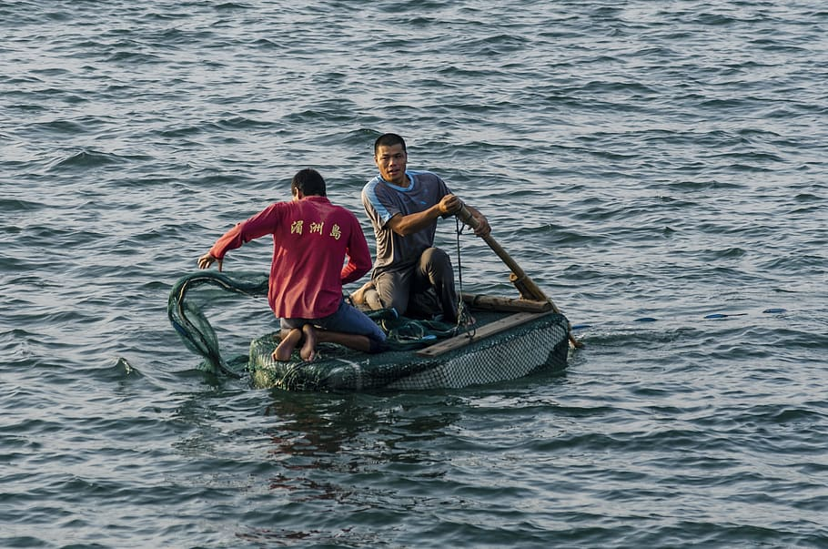

NYHET
En timmes tur med färja från Ystad ligger den fantastiskt vackra ön Bornholm. Öns många vattendrag är mycket produktiva och havsöringen är både talrik och storvuxen. Vill du fånga riktigt stor havsöring så är Bornholm ett bra ställe att satsa på. Här samlas en skara havsöringfrälsta flugfiskare varje år i mars och fiskar havsöring, umgås, äter fantastiskt gott och njuter av fiskarlivet. Just det där med att verkligen njuta samtidigt som man är driven i sitt fiskeintresse är danskarna väldigt duktiga på. I Danmark är havsöringfiske en skön konst och alla bitar från att binda flugan till att chilla med en kall dryck på stranden är lika viktiga. Just denna livsfilosofi sammanfattar på sätt och vis också Bornholm Session. För mig har det kommit att bli starten på vårsäsongen i väntan på öringpremiären 1 april på den svenska västkusten.
NYHET
Det är Miska Escobar som rapporterar om de friska vindarna inom Magelungens fiskevårdsförening i Farsta. Föreningen har långa anor och bildades redan 1937, och nu upplever den en ny blomstringstid igen. Det vinnande konceptet är alltså att satsa på barn och ungdomar, där alla är välkomna, inte minst barn med särskilda behov och nyanlända, genom VIDA-projektet. – Vi vill att alla barn ska få möjlighet att vara ute i naturen och fiska, och vi ger dem den möjligheten. Vi arrangerar bland annat fiskeskolor, sportlovsfiske och höstlovsfiske, berättar Miska Escobar.
NYHET
Båtmässan kommer att innehålla mycket sportfiske, och bland programpunkterna på scenen hittar vi bland annat en föreläsning med Fiskejournalens miljöredaktör Martin Falklind. Han har gjort det mesta när det gäller fiske, film och äventyr jorden runt. Nu har han gett sig in i ett projekt som om möjligt är ännu krångligare än att filma fiske – nämligen att filma de svenska fiskarnas beteenden under ytan.